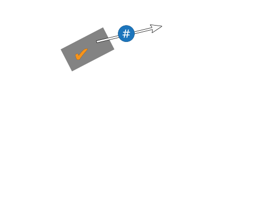

Block

Chain
Blockchain is this hot new buzzword.
We have to start with the big one, Bitcoin.

Bitcoin was started in late 2008. Open-sourced January 2009.
Creator pseudonym Satoshi Nakamoto.
First decentralized virtual currency.
What is money?
Medium of exchange: portable, durable, fungible
Unit of account: divisible, fungible
Store of value: durable, scarce, fungible
One more property: acceptable
Next: things we've used as money

| Durable | |
|---|---|
| Portable | |
| Divisible | |
| Fungible | |
| Scarce | |
| Acceptable |
Shells
Used on most continents.
Still a legal currency in Papua New Guinea alongside their paper money.

| Durable | |
|---|---|
| Portable | |
| Divisible | |
| Fungible | |
| Scarce | |
| Acceptable |
Stone money
Made in Micronesia and Guam
Transported to the island of Yap as currency.
Value from the story of how hard it was to transport.
Ownership transferred by oral history, stones not moved.
| Durable | |
|---|---|
| Portable | |
| Divisible | |
| Fungible | |
| Scarce | |
| Acceptable |
Precious metals, gold and silver.
Pretty popular.
Still used today.

| Durable | |
|---|---|
| Portable | |
| Divisible | |
| Fungible | |
| Scarce | |
| Acceptable |
Cash
Used to represent gold and silver, after World War 2 pretty much everybody decided to switch to unbacked "floating money" so they could fuel government expenses with inflation.
How could we make
digital currency?

Digital items can be duplicated; how can I send you something the way I do in the physical world? The Yapanese people had the right idea: use a ledger.
| Joshua | 25 | - 15 |
|---|---|---|
| Tim | 57 | |
| Dave | 9 | |
| Jack | 12 | + 15 |
| George | 40 |
A ledger keeps track each person's money.
To send money, reduce my account and increase their account.
Like Paypal.
BUT - requires trust
Cryptography
We can use public and private keys to control balances in an anonymous ledger.
1D4FA353C82B4 |
11.5 | - 11 |
|---|---|---|
37563EA8932FB |
6.0 | |
D163512ECD12E |
9.0 | |
D15F73E98432A |
13.5 | - 4 |
333BCBA13A54C |
9.7 | |
8DCFD9B98C72B |
57.0 | |
8DBDA78D8BEF2 |
1.1 | |
C5F83ED13497A |
6.0 | + 15 |
92A1E683111A2 |
30.2 |
Then instead of sending a payment from "Joshua" to "Jack", it's a payment from "private keys A and B" to "public key C".


There's a company that actually did this, called DigiCash. they maintained a ledger with cryptographically controlled balances. Consumers weren't concerned enough about security or privacy and they ran out of money.
Money that depends on a centralized provider can be fragile since there's a single point of failure.
How to decentralize?

You get a ledger! You get a ledger!
YOU ALL GET A LEDGER!!
Double Spending
Real world, double spending is easy.
Two checks
First deposit "wins"
All about timing
the
Byzantine Generals’
problem
The Byzantine army is divided into groups, each group led by a general. But some of the generals are traitors. How can the loyal generals share one plan of attack, even in the presence of a small group of traitors?
This kind of "antifragile" consensus they are looking for is called "Byzantine consensus".
Hashes
Hashing is a one-way transformation of some arbitrary data into some random-seeming but bounded output.
We can get Byzantine consensus with creative use of hashes.

Proof of Work
In 1997 this guy Adam Back came up with HashCash. The idea is that an email client would brute-force a certain amount of zeros as the output to a cryptographic hashing algorithm.

Hash Pointers
Good data structure for a log is a linked list. Blocks with lists of transactions, and each one points to the previous block. But we want this log to be tamper-proof.
Hash pointers can make it so that changes earlier in the chain affect every item after that.
Applications
Money
| Durable | |
|---|---|
| Portable | |
| Divisible | |
| Fungible | |
| Scarce | |
| Acceptable |
Identity
payment information
usernames
DNS
Proof of Existence
embedding a hash in the blockchain demonstrates an item's existence at point in the past
Digital Assets
Smart Contracts
DAO
Ethereum/RootStock